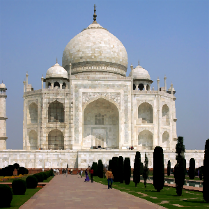

mtPaint has several general image manipulation facilities that are useful for various tasks. These features can be found in the Image and Effects menus.
To crop an image you create a rectangle selection for the area of the image you wish to keep and press the Delete key.
To quickly scale an image you simply press the 'Page Up' key and enter the new image geometry you require. If you are scaling an RGB image you will have a choice of methods. For most situations the default will be most suitable, but the other methods are available if you require something more specialised, such as slightly sharpening the image which is useful for scaling down to a thumbnail sized image.
When you are scaling an RGB image you have the option of using gamma correction to adjust the image. The human eye is more sensitive to differences between the dark colours, than to differences between the light ones. This nonlinearity is used in the RGB encoding, so that the amount of light emitted by display phosphors depends on RGB values not linearly, but through a power function. Usually, one need not know this and account for it; but in graphics processing, when several pixels are mixed together, naively mixing their RGB codes leads to parts of the resulting image becoming darker than they should be, and smaller bright details being lost. To counter this problem, gamma correction should be used.
Actual light levels depend on display settings, such as brightness and contrast, and human sensitivity to different colours of light varies widely too - some people even see colours with their left eye differently than with their right one. To account for this, professional graphics work requires monitor calibration, and image formats include colour profile data; but pixel art doesn't lug colour profiles around, and is viewed by non-professionals on uncalibrated displays - thus for working with it, the best approach is one that works well on average. And the formula from ITU-R recommendation 709, which is used in mtPaint, is one that does work well in average case. Gamma correction is done by converting each RGB component of each pixel into its corresponding light level by using the above formula, mixing these light levels together as particular image processing operation requires, and converting the result back to RGB.
Gamma correction is made optional, instead of being used always by default, because a user might want to disable it to better preserve small dark details on a bright background which otherwise would be lost in the glare. Also, because most other software, such as GIMP, doesn't have gamma correction, and a user might want results identical to those produced by such software.
You can ensure Gamma Correction is used by default by setting the toggle in the Preferences window. Here is an image which has been scaled with and without gamma correction:
Gamma Correction of this type is also used in other functions like free rotating, the unsharp mask effect, and the greyscale effect.
The same considerations apply to all other operations that do pixel mixing, such as alpha blending, partial masking, pasting with feathered edges, painting with partial opacity. Difference can be very noticeable where dark colours are mixed with light ones. All these too can apply gamma correction, but it is controlled by a separate toggle in the Preferences, the "Use gamma correction when painting" one. On the image below, the two circles have been drawn with yellow with opacity 128 on black background; the left one without gamma correction, the right one with it:

It is possible to rotate the image quickly in 90 degree movements, or by any angle. For example, you may have a photo that is not quite straight, in which case you can try this procedure:
If you wish to increase or decrease the width or height of the image you can do this by pressing the 'Page Down' key.
The resize dialog also enables various tile facilities. Here are some examples:
| Original Image. | |
| Offset -32, -32 with 'Tile'. | |
| Offset -32, -32 with 'Mirror Tile' and resized to 320x320. |
If you want to adjust the colour of an image you can do this by pressing the 'Insert' key. This also enables you to use the posterize function to reduce the number of colours in the image.
The "Show Detail" toggle will display additional controls: to choose the type of posterization; to make the adjustment affect the palette (whole or a specific colour range), or not affect the image; and to leave some RGB components unmodified.
The Effects menu allows you to apply effects to the current canvas. The type of effects available will depend on whether your are editing an indexed palette image or an RGB image.
Here is what the bacteria effect can do to a suitably prepared image:


mtPaint has two methods for generating a greyscale image. There is the basic greyscale method and also a gamma corrected version as explained in section 6.2.1. Here is a visual comparison:
 |
Original Image |
 |
Greyscale |
| Greyscale (Gamma corrected) |
The Unsharp Mask is a special type of sharpening method that is more suitable for photographs than the standard Sharpen effect due to the greater amount of control you have over it.
The Radius value controls how many pixels will be used in the sharpening process. If a photo has more fine detail, then a smaller value will be more desirable. If the radius is set too high then halos can appear around the edges in the photo.
The Amount value controls how much sharper the image becomes. The higher the value then the sharper the resulting image will be.
The Threshold value sets the minimum difference in pixels before applying sharpening. This value can be used to protect areas of smooth colour gradients, such as a blue sky, from being affected by the sharpening process.
Here is a visual example of the Gaussian Blur with the different X/Y toggle set:
| Original Image | |
| X = 10, Y = 0 | |
 |
X = 0, Y = 10 |
Kuwahara-Nagao edge preserving blur smooths out small details while preserving, and even sharpening, larger-scale contours. It can be used either as an artistic effect, or to preprocess image for segmentation or edge detection.
The example images show the effect of (gamma corrected) Kuwahara-Nagao blur with radius 1, 3, and 10.

Turning "Protect details" on will leave more of smaller-scale irregularities of contours unsmoothed.
mtPaint has 8 edge detection filters, differing in width of edge response and in resistance to pixel noise. Try them to select which one works best for your task.
Usually, the results of edge detection are improved if image is first processed with gamma corrected radius 1 Kuwahara-Nagao filter. The example below shows the results of Roberts edge detector with and without preprocessing.
You can set two threshold values, lower and upper. Toggle on the "Preview" button to immediately see the effect of the adjustments you make to them.
If you threshold an indexed image, the pixels with colour index outside the range will be set to colour 0, and those inside range, to maximum palette colour.
With RGB images, you have a choice of which colour channel value to use: the maximum one, the minimum one, red, green, or blue. Pixels with value outside the range will be set to pure black, the rest to pure white.
With alpha, selection, or mask channel, the values within the range will be maximized, those outside, zeroed out.
The simpler Threshold operation from the Channels menu uses only a lower threshold value, processes each RGB channel separately and does not respect any masking. Only sufficient for the most basic use case of applying a predefined threshold all over.
The Effects menu allows you to transform a flat image into an isometric version. For example, here is the start image followed by the menu item 'Left Side Down':
This image is created by taking the original image above and then using the menu items 'Bottom Side Right' and then 'Left Side Down':
It may be desirable for technical or artistic reasons to convert an RGB image into an Indexed Palette image. mtPaint has several tools to achieve this using the Image menu option 'Convert to Indexed'. There are two parts to this process: Firstly, a given number of palette colours are set up; Secondly, pixels are plotted using this palette to approximate the original RGB image. Because this process is an approximation, there is no perfect solution and results can vary wildly according to the settings that the artist prescribes.
The first decision you need to make is how many colours you want to have in the palette (between 2 and 256). The more colours you have then the more the resulting image will resemble the original RGB image. If you don't already have a palette prepared, you can use a Quantizer to create an approximate a palette for you. Each of the the Quantizers mtPaint uses has different advantages and disadvantages, so its best to experiment to discover which works best on a given image.
For Wu and PNN quantizers, you can also enable 'Diameter based weighting' option. This allocates more importance to medium frequent colours, usually resulting in palette better matching the colours of image's details.
Once you have a palette prepared, then the pixels can be calculated on the new Indexed Palette canvas. The simplest method is to choose the closest colour in the palette to each of the pixels, which is the 'None' option in the 'Dither' section. The other methods all use techniques of dithering to spread the pixels to make the final image more pleasing to the eye.
'Dithered' and 'Scattered' modes are like special effects as their results are fairly stylised and may bear little resemblance to the original. For practical uses, 'Floyd-Steinberg (quick)' is fast and produces good results for better fitting palettes, such as those produced by quantization to 64 colours or more.
'Floyd-Steinberg' and 'Stucki' are more advanced modes which distribute pixels according to the settings prescribed using the 'Settings' button. Stucki patterns tend to be coarser, with more widely spaced off-colour pixels. Here is what each of the other options does:
Colour space defines how colours are compared. There are three spaces, each emphasizing different aspects of physical colours - naturally, at the expense of other aspects. Because of that, each could be the best choice in some cases, and the worst one in other.
sRGB is a measure of light emitted by a coloured pixel. As dithering actually manipulates the light too, colours nearest in sRGB produce the least possible differences - which leads to smoother result, as long as palette is a good fit. But for worse fitting palettes, this becomes a drawback, as human eye sees differences between light colours much less sharply than between dark ones, and thus, colours nearest in sRGB might not look nearest to the user.
RGB is the colour space which everyone uses, even if most don't know what it is and how to use it properly. Unlike sRGB, RGB values relate to light emitted by pixels in a nonlinear fashion - and while they aren't exactly the measure of brightness which human perceives, they are nearer to it than sRGB values are. Because of that, comparisons in RGB produce larger actual differences than when using sRGB - but the result could still look better.
LXN is a colour space which tries to provide a measure of how people actually perceive colour differences. While its success in that is limited, that's only to be expected - there can be no one true measure, as colour perception isn't in any way constant; different people see things differently, the same thing in different conditions is seen differently, etc. But when RGB selects such a 'nearest' colour that only a blind man would agree, it's LXN to the rescue; it's much less prone to finding green to be nearest to red or doing something equally nonsensical. But then again, with LXN actual differences to be distributed by dithering tend to be even larger than in RGB case, so the resulting patterning could become more noticeable.
Difference measure defines what to consider a distance between two colours in the selected colour space. Mostly it can be left alone, with the traditional Euclidean distance selected by default; but one could use it as a tweak of the last resort, for there's always hope. 'Largest' uses as a distance the largest difference in coordinate from among the three coordinates, and 'Sum' uses the absolute values of all those three differences added together.
Reduce colour bleed is intended to stop colour difference propagation from becoming harmful, and producing visual artifacts instead of improving how the image looks. The default 'Gamut' option does interfere the least; it clamps each colour-plus-difference to the limits of the palette, so that difference could not grow indefinitely - this keeps the difference resolvable in a single pixel, preventing such things as off-colour borders appearing around flat-coloured areas. The 'Weakly' option additionally clamps the difference itself to no more than half of maximum brightness; and 'Strongly' clamps it even more, to one quarter of maximum. This could be used to prevent off-colour pixels from appearing where they do more harm than good, but I prefer tweaking error propagation instead.
Serpentine scan means that each second scanline is processed in the reverse direction. Usually it is the best choice, because differences are distributed alternately left to right and right to left, without accumulating on the right-hand side and producing visible artifacts. But there are cases where dumping the accumulated difference somewhere to the right is preferable to dragging it back to the left - then serpentine scan could be switched off.
Error propagation controls what percent of the difference arising from each pixel gets redistributed. Usually it's all of it - 100%; but for not-so-good fitting palettes, that difference frequently can't influence near enough pixels and would instead accumulate uselessly till causing some far-off pixel to assume an out-of-place colour. To prevent that occurence, propagation level could be reduced. The most common advice is to set it to 75%, but I found that 85% produces practically the same result; images become much clearer, while somewhat darker overall. Usually they look best when Stucki dithering is used.
But reducing error propagation indiscriminately isn't always the best course; the ideal solution would be to dampen only the useless and harmful cases, while preserving those differences that improve the visual quality. Selective error propagation approximates that, as much as possible within acceptable time and space constraints.
Selective propagation attempts to pass the colour difference no farther than the neighbouring pixels; if it's not incorporated into them, it should be dropped. But the problem is, the incoming difference and the receiving pixel's original colour are added together, and after the pixel colour was selected according to that, then how to decide which part of the remaining difference belongs to the pixel itself and has to be propagated further, and which part is from the incoming difference and has to be dropped away? The four strange-looking modes you see are four different ways to approximately solve this unsolvable problem.
In any case, the difference is split in the proportion of the incoming difference to the local one (the latter being the difference that would remain, had the incoming difference been zero). But in 'Separate' modes, red, green, and blue components are weighed separately, and split according to that - and in 'Length' modes, the difference vectors' lengths are used as weights, same for all three components.
The other half of modes' names is related to handling the incoming difference that caused no effect on the receiving pixel's colour; in the 'Sum' modes, differences still are weighed and split in the above way, and the 'Split' modes simply drop the incoming difference completely, and propagate the local one.
While the resulting four modes are only marginally different, there still are cases where one of them works better or worse than another one; but whichever one would best fit a given image, can be determined only by trial and error.
When selective propagation is turned on, error propagation percentage controls what percent of the incoming difference to preserve despite it being dropped; by default it's 85%, working as a more discriminating variant of reduced overall error propagation, but could be lowered to 75% or all the way to 0.
Where selective propagation is needed most is fine-resolution images being converted to not-quite-fitting palettes. For a small sprite image being converted from one palette to another, getting, say, a red area slightly darker but still smooth is infinitely more preferable to that same area being peppered by white pixels; and selective propagation prevents such unfortunate occurences, while still remaining able to convert, say, a rose-colored area into a chequerboard pattern of red and white pixels.
| A | B | C | D | E | F |
 |
 |
 |
 |
A - Original.
B - 8 colours, Using current palette, Floyd-Steinberg (quick).
C - 8 colours, Using current palette, Floyd-Steinberg.
D - 8 colours, Using current palette, Floyd-Steinberg, RGB colour space, separate/split at 50% error propagation.
E - 8 colours, PNN Quantizer, Floyd-Steinberg.
F - 8 colours, Max-Min Quantizer, Floyd-Steinberg, LXN colour space, separate/split at 75% error propagation.
Sometimes the Quantizers produce flatter and less colourful results than are desirable. This can sometimes be avoided by making the image more saturated by using the 'Transform Colour' window before converting the original RGB image. The best quantizer for maintaining image saturation and contrast for small palettes (e.g. 16) is the Max-Min combined with Floyd-Steinberg or Stucki.
If you are reducing an RGB image to just a few colours, like 16, the Quantizer may miss a few important colours that you want to appear in the indexed image. You can manually avoid this problem by doing the following:
If you are using the more advanced dithering methods such as 'Floyd Steinberg', it can be sometimes useful to select the 8 corners of the colour cube (black, red, green, yellow, cyan, magenta, white). By doing this the results will be higher contrast than by using a quantizer, which in some cases is preferable. Using just these 8 colours, mtPaint will be able to approximate most photograhic images fairly well.
The dithering settings for Floyd-Steinberg and Stucki need to be experimented with for each image to achieve the best results, but I use the following settings due to their good results over many different types of photos:
By using the Skew option in the Image menu you can skew the canvas vertically, horizontally, or in both directions at once (horizontally then vertically, in a single operation). The amount of skew can be specified in two ways - either as an angle, or as offset along the skew direction, at a specified distance. The latter method makes it easy to do pixel-precise skew - instead of having to calculate an angle from offset and distance, you just feed the values to mtPaint.
With the Segment option in the Image menu you can make a segmentation map of the image. Results are much improved (segment boundaries more precisely follow contours of objects in the image) if the image is preprocessed with a gamma corrected radius 1 Kuwahara-Nagao filter.
The larger is the Threshold value, the more dissimilar areas can be merged into one segment. Level controls coarseness of segmentation in a roughly logarithmic scale, by setting a minimum number of merges for a segment; it means that generally, smallest segment on one level is about twice smaller than on the level above it. Minimum size increases coarseness in a linear scale, so it may only be useful for low Level values.
Switching to a different colour space, or another difference measure, may improve segmentation for some images. However, it resets the threshold value and you will need to adjust it again.
Best segmentation settings for a specific object in a specific image can only be found by trial and error, which is made easier by enabling preview. Then, segment boundaries will be superimposed on the image in thin lines, and dynamically recalculated for every change of settings (colour is selectable through the 'Configure grid' dialog).
Once you are satisfied with segmentation, press Apply to replace the image with the segmentation map, with each segment filled by a distinct RGB colour. Making use of this map is up to you.
One possible use I would like to describe, is cutting out a complex object from the image. To do this, you set up three layers in this way:
When you enable "Show all layers in main window", it will look like this:
Then you switch to the transparent layer, set your colour A to opaque magenta (RGB 255/0/255, alpha 255), and colour B to transparent, say, green (0/255/0, alpha 0), and proceed to flood fill the segments not belonging to your object with colour A and segments belonging to it with colour B. When you are done it will look like this:
Now you switch to editing alpha channel, invert it, and copy to the clipboard. Then you switch to the background layer, then to editing its alpha channel (creating an empty one) and paste the clipboard there. Now, having made everything but your object transparent, you can do with it whatever you wish.